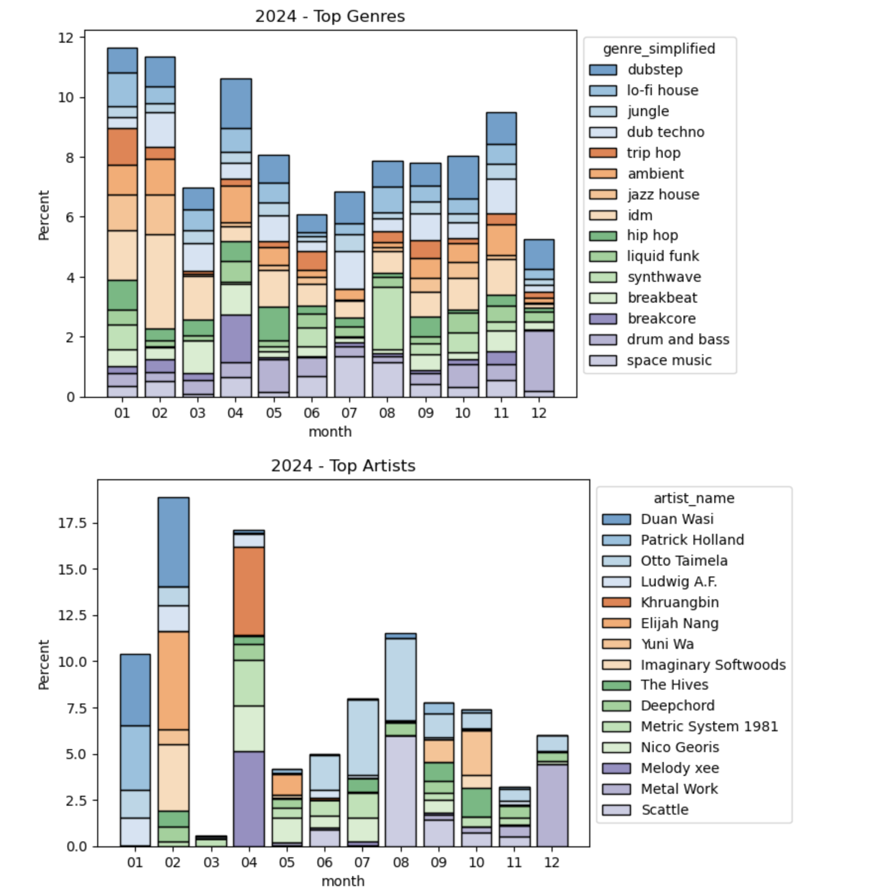

Jordan T. Hoskins
Data Scientist | Music Nerd | Outdoorsy
Data Scientist | Music Nerd | Outdoorsy
I am an experienced Data Scientist and Engineer with a background in Natural Language Processing (NLP), Text-to-Speech (TTS), and computational linguistics. Over the years, I've contributed to the development of advanced models and data systems across a number of teams large and small.
A pet project doing some EDA with my music listening data from Spotify. Here's an example graph, then the code:
